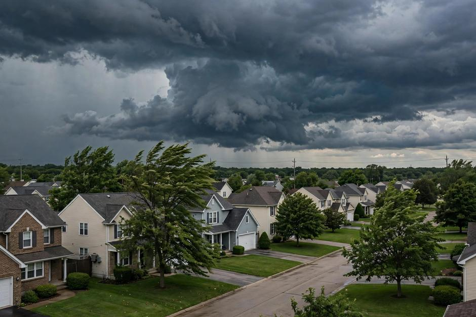
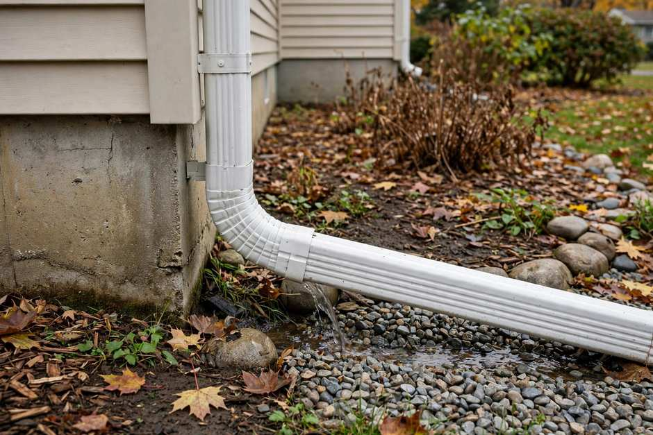

Cumberland Metra Station
The Union Pacific Northwest line station is the hub of the area, with the Cumberland circle area nearby. Always the Des Plaines Metra station — not the Chicago CTA station of the same name.
Cumberland is the station area around the Cumberland Metra station on the Union Pacific Northwest line in northwest Des Plaines — not the Cumberland CTA station in Chicago, and not a City-designated neighbourhood. The single-family streets carry postwar ranch and split-level pitched roofs, with townhome blocks near Northwest Highway, and Weller Creek runs through the area. WP Exterior Inc serves addresses inside the Des Plaines city limits; call (224) 802-4866 during office hours.
Describe what you are seeing on the roof. Calls are answered during the office hours listed below.
Call (224) 802-4866 → Phone is the only contact channel. No email or online form.Cumberland work starts from the stock: pitched postwar roofs on the single-family streets, shared planes on the townhome blocks, and creek-adjacent checks where Weller Creek runs. Related reading: spotting hail damage after a storm and why shingles curl and crack. See the full list on the services page.
 Roof ReplacementOn a postwar ranch or split-level, replacement means low-to-moderate pitch hips and gables, wide eaves, and — on split-levels — staggered planes with mid-level valleys. Prior layers and varied decking are plausible inspection findings on mid-century stock, checked per house.View details →Roof RepairCommon repair topics on this stock include missing or cracked shingles, loose flashing at chimneys and walls, and failing rubber pipe boots. The entry point is found first, in the attic as well as on the roof.View details →
Roof ReplacementOn a postwar ranch or split-level, replacement means low-to-moderate pitch hips and gables, wide eaves, and — on split-levels — staggered planes with mid-level valleys. Prior layers and varied decking are plausible inspection findings on mid-century stock, checked per house.View details →Roof RepairCommon repair topics on this stock include missing or cracked shingles, loose flashing at chimneys and walls, and failing rubber pipe boots. The entry point is found first, in the attic as well as on the roof.View details → Roof InspectionAn inspection records the surface, flashing, valleys, penetrations, and accessible attic conditions, with photographs and written findings. On townhome blocks it also notes the shared-plane and party-wall details that shape any later discussion.View details →
Roof InspectionAn inspection records the surface, flashing, valleys, penetrations, and accessible attic conditions, with photographs and written findings. On townhome blocks it also notes the shared-plane and party-wall details that shape any later discussion.View details → Emergency Roof RepairEmergency roof repair addresses active leaks and storm breaches. Call during office hours and describe what is happening, and the next step is arranged from there.View details →
Emergency Roof RepairEmergency roof repair addresses active leaks and storm breaches. Call during office hours and describe what is happening, and the next step is arranged from there.View details →
Storm Damage Roof RepairHail and wind events in the April-to-September severe-weather window can bruise shingle mats without tearing the surface. An inspection records visible damage with dated photographs and written findings for the homeowner’s own records.View details →
Gutter InstallationGutters and downspouts move water off the roof edge and away from the house, and blocked or failed gutters worsen ice-dam problems. Fascia condition is assessed alongside the gutters, since it determines what can be hung.View details → Roof Ventilation InstallationAttic ventilation is one leg of ice-dam prevention, alongside air sealing and insulation — never the cure alone. Blocked soffit vents and mixed vent types on mid-century homes are recurring inspection topics, checked per house.View details →
Roof Ventilation InstallationAttic ventilation is one leg of ice-dam prevention, alongside air sealing and insulation — never the cure alone. Blocked soffit vents and mixed vent types on mid-century homes are recurring inspection topics, checked per house.View details → Skylight InstallationSkylights on mid-century stock are commonly original or aged units, and flashing and curb details are repeat leak points. The decision between reflashing and replacing a unit follows inspection of the curb, flashing, and deck around it.View details →
Skylight InstallationSkylights on mid-century stock are commonly original or aged units, and flashing and curb details are repeat leak points. The decision between reflashing and replacing a unit follows inspection of the curb, flashing, and deck around it.View details →
Cumberland is a station-area and subdivision usage, not a City inventory entry. Work here follows the stock and the creek, house by house.
The single-family streets are predominantly postwar in character: ranch and split-level forms with low-to-moderate pitch hips and gables, wide eaves, and staggered planes on split-levels.
How we help: Inspection checks the planes, the mid-level valleys on split-levels, the flashing at chimneys and walls, and the attic underside, and records findings in writing.
Attached housing stands along Northwest Highway near the Cumberland Metra station, with shared pitched planes and party-wall valleys. Roof responsibility for townhomes varies by declaration, and no declaration was read for any complex here.
How we help: Who decides — owner or association — is confirmed per complex before any scope is discussed, so the conversation starts with the right party.
The Weller Creek floodplain contains homes and businesses, in the Comprehensive Plan’s words. That makes creek-adjacent addresses a per-address check — it does not make the whole of Cumberland flood-prone, and this page does not label it so.
How we help: A FEMA Flood Insurance Rate Map check is made for creek-adjacent addresses, and flood-zone status is never assumed for any address.
Stains on ceilings or walls after rain or thaw
Shingle granules collecting in gutters or at downspouts
Curling, cracking, or missing shingles, or lifted ridge caps
Loose flashing at a chimney, wall, or vent penetration
Ice dams forming at eaves or in valleys in winter
These anchors are the streets, station, creek, and park the City’s plan and other sources consistently name. No boundary map was read, so no polygon is drawn and no boundary is claimed.
The Union Pacific Northwest line station is the hub of the area, with the Cumberland circle area nearby. Always the Des Plaines Metra station — not the Chicago CTA station of the same name.
The four roads meet around the station area and frame the cluster. The townhome blocks stand along Northwest Highway near the station.
The creek runs through the area, with its floodplain containing homes and businesses. Creek-adjacent addresses get a per-address flood-map check.
The park stands on or near Weller Creek and anchors the Cumberland Terrace side of the cluster, named in the City’s plan alongside the station area.
WP Exterior Inc serves addresses inside the Des Plaines city limits. A Des Plaines mailing address does not by itself prove an address is inside the city: a large unincorporated area east of I-294 carries Des Plaines mailing addresses but has never been part of the city, and permit jurisdiction follows the city limits. If an address sits near an edge or on a border road, its jurisdiction is checked per address before any permit or service claim is made. Cumberland addresses sit in the northwest of the city around the station; an address near Weller Creek or on a border road still gets its jurisdiction and flood-map checks per address.
Call with the full street address. City maps and county parcel records settle whether an address is inside Des Plaines, and the FEMA Flood Insurance Rate Map is checked per address where floodplain questions arise. No list of ZIP codes is used as a coverage boundary.
“Patryk was great to work with and extremely professional. I highly recommend WP exteriors and plan on using them again in the future!”
Brian Avila Gaona5 months ago · Roof inspection
Google review“Thank you Patrick for doing an amazing job. Great work me and my wife are very happy. Also thanks for being reliable.”
Phil Negron2 months ago · Gutter repairs
Google review“I use WP Exteriors to repaint my roof and do as some tuckpointing on the exterior of my building. Pat and his team were very professional and communicative. They did a good job explaining what needs to be done to my home immediately and what I can plan for in the future. I will definitely be using them in the future.”
Patricia Murray2 months ago
Google reviewCall during office hours if your question is not answered here.
Call (224) 802-4866 →The Cumberland Metra station area in northwest Des Plaines, around Northwest Highway, Golf Road, Rand Road, and Wolf Road. It is not the Cumberland CTA Blue Line station in Chicago, and storm-report uses of the name Cumberland may refer to unincorporated ground.
No. Des Plaines has no official neighbourhood list; the City's only citywide subdivision is its eight wards. Cumberland is a station-area and subdivision usage verified in the City's plan, Metra sources, and listing sources — not a City inventory entry.
No. The Weller Creek floodplain contains homes and businesses, so creek-adjacent addresses need a FEMA Flood Insurance Rate Map check. The whole of Cumberland is not labelled flood-prone on this page, and flood-zone status is never assumed for an address.
It varies by declaration, and no declaration was read for any complex here. Townhome roofs near the station may be association-controlled, so who decides is confirmed per complex before any scope is discussed.
Postwar ranch and split-level pitched roofs predominate on the single-family streets, with newer two-storey infill and townhome blocks near Northwest Highway. No Cumberland-specific material survey exists, so expectations stay era-typical and every house is checked on its own facts.

Call WP Exterior Inc during office hours and describe the house and what you are seeing. The conversation starts from the specific roof, not from a generic price or timeline.
Call (224) 802-4866 during office hours. Tell us the street address — and whether the home is near Weller Creek or the station — and what you are seeing.